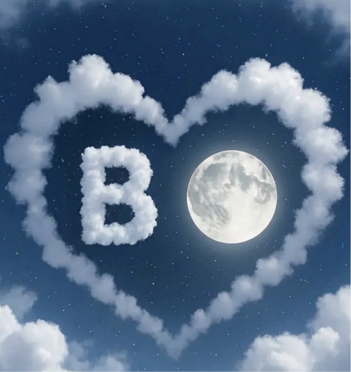

before you go, mdwara
Travel
safe,
Batoul
a little something to take with you 🌙

even the sky spells your name
wherever you fly, look up — we're under the same moon
You're going away for a little while, and I already miss you, before you've even left.
I'm going to miss all of you. Every version of you. I'll miss your evil little side, the teasing and the mischief in your eyes when you know exactly what you're doing. And I'll miss your cute side just as much, the soft one, the shy smiles, the way you get when you're sleepy or happy. Your loud moods and your quiet ones. All of your times, Batoul. There isn't a single side of you I don't want.
I know these past days weren't easy. Your mood has been heavy, and I feel it. But please hear me: I don't only love you on the good days. I love every day I get with you. Even the messy ones. Even the tired ones. Just being near you is enough for me.
And when you're happy, that's my whole world. Your joy is my joy. Your laugh is the best sound I know. So while you're away, I want you to be happy. Really happy. Have fun, let yourself go, and enjoy every second, without worrying about anything back here.
I'll be right here, thinking about you, counting the days until you're back in my arms.
— Naim, always yours
the truth is, I'll miss
your evil little smile 😈
your cutest soft moods 🥺
and every single mood between
all of you. always all of you.
Now go have fun 🌙
laugh loud. eat everything.
take a hundred pictures. be free —
and come back to me, mdwara.
I love you. All of you. Always. 💛